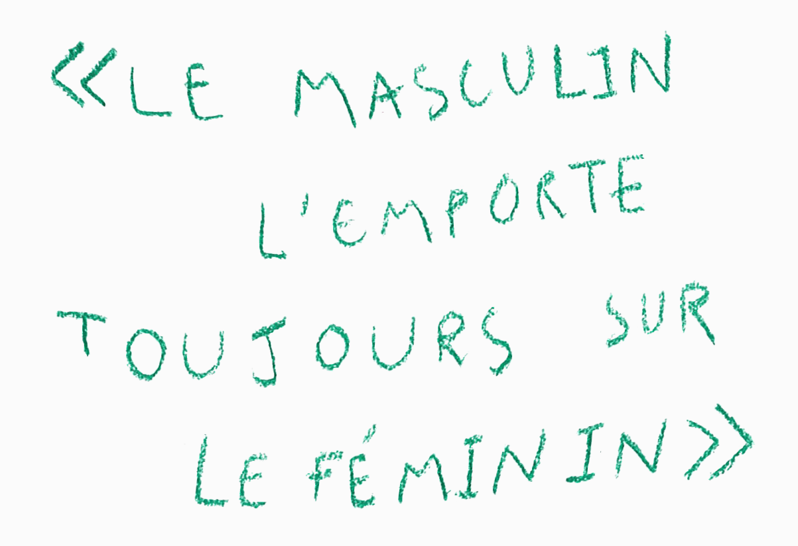

En grammaire le masculin ne l’a pas toujours emporté sur le féminin
Jusqu'au 18e siècle, on utilise
l' accord de proximité. On accorde l’adjectif en genre et en nombre avec le dernier nom. Ainsi, on écrit par exemple : Les femmes et les
hommes sont
gagnants, ou Les hommes et les
femmes sont
gagnantes.
Puis l’accord de proximité est remplacé par la règle «quand les deux genres se rencontrent, il faut que le plus noble l'emporte» (
Abbé Bouhours, 1628-1702), le genre le plus noble désignant évidemment le genre masculin, comme l’explique le grammairien Beauzée (1717-1789) : «Le genre masculin est réputé plus noble que le féminin à cause de la supériorité du mâle sur la femelle». C'est cette règle que l’on apprend
toujours à l'école sous la forme
Le masculin l'emporte toujours sur le féminin.

Curieuse disparition
De la même manière, un grand nombre de métier féminin ont curieusement disparu de notre vocabulaire.
Avant le 17e siècle, on emploie régulièrement les mots philosophesse, poétesse, autrice, mairesse, capitainesse, médecine, peintresse, etc. Tous ces mots sont supprimés pour ne garder que leur forme masculine, et ce afin d'empêcher les femmes d'être légitimes dans ces professions. Certains métiers conservent en revanche leur version féminine, tels que boulangère, un métier qui ne représente pas de pouvoir intellectuel, ou encore actrice, qui renvoie à un métier lié au corps et non à la réflexion.
Cette réforme va très loin, puisqu’on va jusqu'à changer le genre de nombreux noms communs. Ce qui est négatif, mou ou considéré comme féminin est associé aux femmes, alors que ce qui est positif ou puissant revient aux hommes. Le mot erreur, par exemple, qui est initialement masculin devient féminin (tiens donc!).